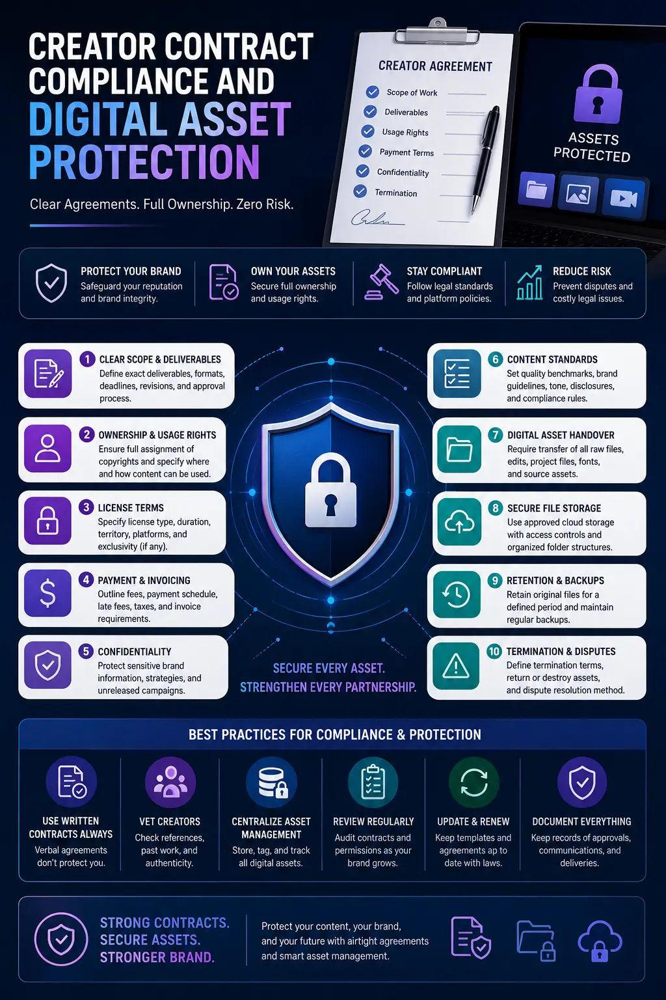
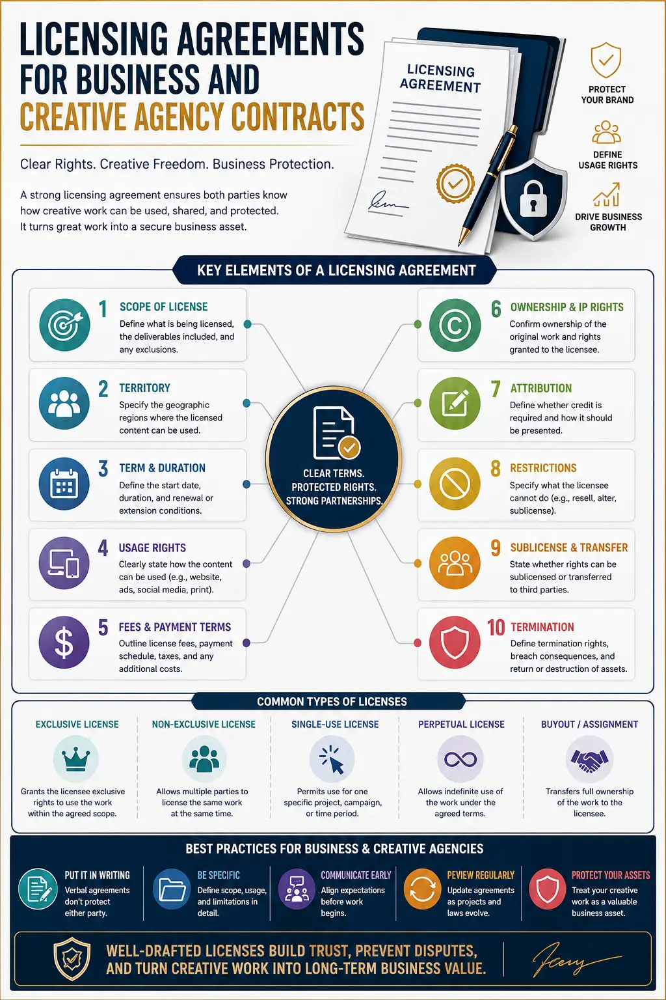

Contractual and Legal Safeguards Every Brand Needs When Hiring External Creators
Introduction: The Shift to Decentralised Creative Production
In the modern digital landscape, content is the lifeblood of brand engagement. To sustain the constant demand of social feeds, programmatic advertising, and localized target campaigns, brands are shifting away from traditional massive studio productions toward a decentralized ecosystem of freelancers, influencers, and independent content creators. While this decentralization offers unmatched agility and creative diversity, it introduces significant risk. Producing high-quality Digital Ad Campaign Visual Assets involves far more than simply finding a talented individual, paying them a fee, and uploading the finished file.
Without a rigorous framework of Creator Contract Compliance, your company could be one Instagram story or boosted post away from a cease-and-desist letter, a platform copyright strike, or a costly lawsuit. Many businesses operate on verbal agreements, brief email threads, or incomplete invoices, under the mistaken impression that paying for content automatically makes them the legal owners of that content. In reality, the law does not work this way.
Safeguarding your company's investments and ensuring long-term Intellectual Property for Visual Content requires a clear understanding of copyright frameworks, model releases, usage restrictions, and structured covenants. This comprehensive guide outlines the primary legal and contractual safeguards that must be integrated into all your creator and influencer collaborations.
1. Intellectual Property & The Default Ownership Trap
The single most common legal misunderstanding in modern marketing is the assumption of ownership. When you hire an external videographer or graphic designer to produce Digital Ad Campaign Visual Assets, you might believe that because your brand paid for the shoot, your brand owns the resulting media. However, under standard copyright law, ownership of a work initially vests in the author—the person who pressed the shutter button or drew the vector line.
To change this default position, you must have a written contract that explicitly transfers ownership from the creator to your business. Without this document, you do not own the content; you merely possess an implied license to use it under limited circumstances. This is why standardising your creative agency contracts and freelancer templates with clear, unambiguous intellectual property assignment language is essential.
Furthermore, businesses frequently encounter disputes regarding raw files. If your campaign performs well and you wish to edit the footage into a different format or crop it for a new platform, you will need the high-resolution raw footage. However, under standard raw footage ownership law, unless your contract specifically transfers ownership of all raw, unedited files and outlines delivery requirements, the creator has no legal obligation to provide them. They own the source files, and you may find yourself forced to negotiate additional fees just to access the raw materials you already assumed were yours.
2. Commercial Reuse Rights and Usage Parameters
Even when a creator agrees to let you use their content, the scope of that use must be explicitly defined. A creator might be comfortable with your brand posting their video organically on your Instagram feed, but they may legally object if you turn that same video into a paid advertisement or run it as a YouTube pre-roll ad. This distinction is at the heart of commercial visual asset reuse rights.
To protect your business from licensing disputes, all licensing agreements for business must detail the permitted use cases. Specifically, you must outline:
- The Channels: Specify whether the content can be used on organic social media, paid advertising platforms (Meta, TikTok, Google Ads), programmatic networks, websites, email marketing, or even offline mediums like television and digital billboards.
- The Duration: Define whether the usage rights are perpetual or limited to a specific timeframe (e.g., 6 months, 1 year). If limited, the contract must state the process and pricing for renewing the rights.
- The Geography: Determine if the license is worldwide or restricted to specific countries or regions. Running a localized campaign that inadvertently displays to international users can trigger breaches of localized contracts.
- The Right to Modify: Ensure your agreements grant your team the right to edit, crop, stitch, add text overlays, translate, or otherwise alter the content to fit various ad formats without requiring further approval from the creator.
Failing to establish clear usage boundaries can lead to devastating consequences. If a campaign goes viral and you scale the budget on your ad manager, the creator could demand additional royalties or file a copyright strike, instantly halting a high-performing lead generation engine.
Digital Asset Protection
Establishing comprehensive security and clear ownership frameworks for all creative assets, ensuring your library remains an appreciating business asset.
Creator Contract Compliance
Enforcing strict operational standards, delivery timelines, and performance parameters across all freelancers and agencies.
Clear Raw Footage Rights
Securing raw, unedited source files and B-roll under raw footage ownership law to facilitate future edits and campaign iterations.
Commercial Reuse Rights
Ensuring unrestricted commercial visual asset reuse rights across paid advertising channels, email, and programmatic media.

3. Model Releases: Protecting the Right of Publicity
Even if you have secured the copyright to a video or image, you cannot legally use it for commercial advertising if the faces or voices of the individuals featured in the media have not been cleared. Every individual possesses a "right of publicity," which prevents businesses from using their name, likeness, image, or voice for commercial purposes without explicit, written consent.
This is why obtaining valid Content creator model releases is a non-negotiable step in creator onboarding. A model release is a simple legal document signed by the creator (and any other models or actors appearing in the content) granting your brand the right to use their likeness for commercial and promotional purposes.
When drafting creative agency contracts, ensure there is a clear representation and warranty stating that the agency or lead creator has secured signed model releases from all secondary individuals who appear in the footage. If they hire background actors, friends, or family members to participate in the shoot, your brand must have access to those signed releases. Without them, a secondary actor could demand that your ad campaign be taken down, rendering your entire investment in those Digital Ad Campaign Visual Assets worthless.
In the age of digital transformation, this safeguard extends beyond physical appearance. Modern model releases should also account for digital replication, AI training, and synthetic voice generation, explicitly stating whether the brand has the right to use the creator's voice and likeness in interactive or automated digital environments.
4. Technical Delivery Standards and Service Level Agreements (SLAs)
A contract is not just a tool for risk mitigation; it is also an operational blueprint that defines quality and execution. When hiring external creators, you must define the technical delivery standards as clearly as the legal rights. Without structured service level agreements (SLAs), you may receive files that are technically unusable for paid advertising.
To maintain quality control, your contract should specify:
- Technical Specifications: Detail the required resolutions (e.g., 4K or 1080p), aspect ratios (9:16 for vertical stories/reels, 4:5 for feed ads, 16:9 for landscape), file formats (Apple ProRes, MP4, raw log files), and frame rates (24fps, 30fps, 60fps).
- Revision Rounds: Outline the exact number of revision rounds included in the initial fee (typically one or two). Define what constitutes a "revision" (adjusting colors, changing music, swapping a shot) versus a "re-shoot" (which requires a change in creative direction and should incur additional costs).
- Delivery Mechanisms: Specify how and where the files should be delivered (e.g., a shared Google Drive, Frame.io link, or physical hard drive) and define the naming conventions to ensure efficient internal management.
- Deadlines and Penalties: Establish firm delivery deadlines. In digital marketing, campaigns are often tied to specific product launches, holidays, or seasonal events. A late delivery can disrupt an entire multi-channel marketing plan. Include clear provisions outlining the consequences of late delivery, such as fee discounts or contract termination.
By embedding these specifications directly into your creative agency contracts, you establish clear expectations, reduce communication friction, and ensure that the assets delivered are ready to be deployed into your ad accounts immediately.
5. Indemnification, Third-Party Rights, and Liability
One of the most dangerous risks when hiring external creators is the unauthorized use of third-party intellectual property. A creator might produce a visually stunning video, but set it to a popular chart-topping song they downloaded from TikTok. While individual users can often post videos with copyrighted music under fair use or platform licensing deals, brands cannot. If your brand posts or sponsors an ad containing unlicensed music, you can face massive copyright infringement lawsuits from record labels.
The same risk applies to visual elements. If a creator shoots a video inside a coffee shop that prominently displays the cafe's logo, or features copyrighted artwork, logos on clothing, or trademarked products in the background, your brand could face trademark dilution or trade dress infringement claims.
To shield your business from these liabilities, your licensing agreements for business must include strong indemnification and warranty clauses. The creator must warrant that:
- The content they deliver is entirely original and does not infringe upon the intellectual property, privacy, or publicity rights of any third party.
- All music, sound effects, fonts, graphics, and stock footage used in the content are fully licensed for commercial use by the brand.
- They will indemnify, defend, and hold your brand harmless from any claims, damages, liabilities, or expenses (including legal fees) arising from a breach of these warranties.
Additionally, it is crucial to protect your brand's proprietary information. During production, you will often need to share unreleased products, marketing strategies, or brand guidelines with the creator. Your agreements must contain strict non-disclosure (NDA) clauses to ensure that this sensitive information does not leak to the public or competitors before your campaign launch, providing a vital layer of digital asset protection.
Social Media & Paid Media
- Secure rights for paid boosting and whitelisting on social channels.
- Incorporate flexible edit rights to allow multi-variant testing.
- Require clear disclosures and hashtag compliance (e.g., #ad, #sponsored) in line with advertising regulations.
Enterprise & Broadcast
- Establish perpetual, global licenses for multi-market usage.
- Obtain high-resolution RAW files for television and print media.
- Enforce complete buyout options to prevent recurring residual payments.
E-Commerce & Web Content
- Secure permanent hosting rights for product detail pages.
- Ensure permission to repurpose user tutorials in help centers.
- Authorize third-party distributor usage (e.g., Amazon, Shopify storefronts).

6. Building a Content Governance System
As your brand scales its content operations, managing individual contracts, model releases, and licensing terms across dozens of creators becomes highly complex. To prevent legal oversight, you need to establish a structured content governance framework.
The foundation of this framework is a centralised Digital Asset Management (DAM) system. Every visual file in your library should be tagged with metadata indicating who created it, what contract governs it, what the licensing limitations are (e.g., "Expiring July 2027"), and whether signed model releases are on file.
Conducting periodic compliance audits is also highly recommended. Review your active ad campaigns to ensure that no content is running beyond its licensed duration. Running an ad featuring a creator whose one-year contract expired last month can lead to immediate penalties and back-payment demands.
For many businesses, managing this level of legal and operational detail in-house is overwhelming. Partnering with a professional creative agency that specialises in compliance, asset security, and creator management is often the most efficient path forward. The PhD Ads, a leading creative agency based in Madurai, specialises in developing robust creative agency contracts, managing creator relations, and building secure media pipelines. We ensure that every piece of content delivered to your brand is fully cleared, legally secure, and optimised for performance.
Conclusion
Hiring external creators is one of the most effective ways to build authentic connections with your audience, but it must be done with proper legal safeguards. By ensuring Creator Contract Compliance, securing full Intellectual Property for Visual Content, and managing Content creator model releases and commercial visual asset reuse rights, you protect your brand from disruptive disputes and litigation.
Treating legal safeguards as a core component of your creative workflow is an investment in your brand's future. It allows you to build a secure, reusable library of high-converting Digital Ad Campaign Visual Assets that can drive revenue for years to come.
At The PhD Ads, we combine world-class visual production with rigorous legal and operational compliance. Whether you are running local social media campaigns or nationwide digital rollouts, we protect your creative investments and secure your digital assets at every stage of the production pipeline.
Key Topics
Ready to Secure Your Content Assets and Ensure Legal Compliance?
Partner with The PhD Ads in Madurai to design, produce, and legally safeguard your digital media campaigns. We manage creator onboarding, compliance documentation, model releases, and asset rights so your marketing team can focus on growth with absolute peace of mind.
Email: team@e2o.in